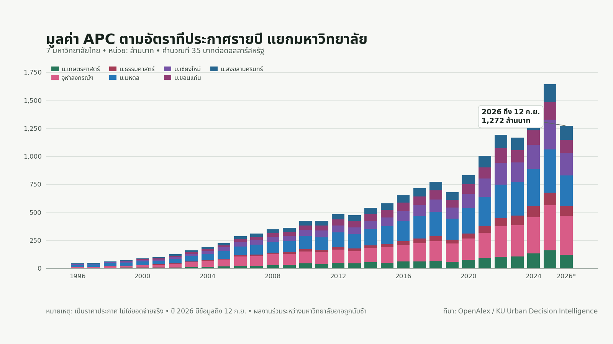

ค่าตีพิมพ์งานวิจัยของมหาวิทยาลัยไทย ใครเป็นคนจ่าย
{kind=link}

ข้อมูลจาก OpenAlex ของมหาวิทยาลัยไทย 7 แห่งแสดงว่า ในปี 2026 ถึงวันที่ 12 กันยายน ผลรวม APC ตามราคาประกาศอยู่ที่ประมาณ 1,271.9 ล้านบาท หากประมาณตามสัดส่วนเวลา ทั้งปีจะอยู่ราว 1,820 ล้านบาท
เมื่อรวมช่วงปี 1996 ถึง 12 กันยายน 2026 มูลค่าตามราคาประกาศอยู่ที่ประมาณ 16,751 ล้านบาท หรือเกือบ 1.7 หมื่นล้านบาท ตัวเลขนี้ใหญ่พอที่จะทำให้เราควรถามต่อว่าระบบการเผยแพร่งานวิจัยมีต้นทุนอย่างไร และใครเป็นผู้รับภาระ
ราคาประกาศไม่ใช่ยอดจ่ายจริง
ตัวเลขข้างต้นมาจากค่า APC list price ที่พบใน OpenAlex ไม่ใช่ยอดที่มหาวิทยาลัย นักวิจัย หรือแหล่งทุนจ่ายจริง ข้อมูลครอบคลุมบทความทุกสถานะการเข้าถึง และบทความที่มีผู้เขียนร่วมจากหลายมหาวิทยาลัยอาจถูกนับให้แต่ละสถาบัน จึงไม่ควรรวมตัวเลขแล้วเรียกว่า “รายจ่ายจริง” โดยตรง
ส่วนลด การยกเว้นค่าธรรมเนียม ข้อตกลงระหว่างสถาบันกับสำนักพิมพ์ และแหล่งเงินที่ใช้ชำระ ล้วนทำให้ยอดจ่ายจริงแตกต่างจากราคาประกาศได้มาก ในทางกลับกัน การไม่มีข้อมูล APC ก็ไม่ได้แปลว่าบทความนั้นไม่มีต้นทุน
ใครเป็นผู้รับภาระ
คำถามสำคัญกว่าตัวเลขรวมคือ ค่าใช้จ่ายเกิดขึ้นจริงเท่าไร และใครเป็นผู้จ่าย ผ่านงบประมาณจากภาษี รายได้ค่าเล่าเรียน ทุนวิจัย เงินของหน่วยงาน หรือเงินส่วนตัวของอาจารย์และนักวิจัยที่ต้องมีผลงานเพื่อสำเร็จการศึกษา ต่อสัญญา หรือขอตำแหน่งทางวิชาการ
หากไม่มีข้อมูลผู้จ่าย เราจะเห็นเพียงราคาของระบบ แต่ยังไม่เห็นการกระจายภาระ และยังประเมินไม่ได้ว่าบุคลากรต่างสาขา ต่างสถานะการจ้าง หรือสถาบันที่มีทรัพยากรไม่เท่ากัน กำลังเผชิญกติกาที่เป็นธรรมหรือไม่
แรงจูงใจกำหนดทิศทางการสร้างความรู้
เมื่อการตีพิมพ์เชื่อมโยงกับทุนวิจัย การสำเร็จการศึกษา ความก้าวหน้าในอาชีพ และอันดับมหาวิทยาลัย ค่าใช้จ่ายในการเผยแพร่จึงไม่ใช่เพียงเรื่องบัญชี แต่เป็นส่วนหนึ่งของระบบแรงจูงใจที่กำหนดว่าหัวข้อใดได้รับการศึกษา งานแบบใดถูกนับว่ามีคุณค่า และใครมีโอกาสเข้าร่วมระบบนี้ได้
คำถามจึงไม่ใช่เพียงว่า APC แพงหรือถูก แต่คือกระเป๋าสตางค์ของใครมีส่วนกำหนดกติกา และกติกานั้นกำลังพาให้มหาวิทยาลัยผลิตความรู้แบบใด
ข้อมูลที่ควรมี ก่อนตัดสินใจเชิงนโยบาย
การตอบคำถามนี้ต้องเชื่อมข้อมูลราคาประกาศกับยอดจ่ายจริง ส่วนลดและการยกเว้น แหล่งเงินที่ใช้จ่าย สถานะการเข้าถึง ข้อตกลงกับสำนักพิมพ์ และจำนวนผลงานที่ไม่ซ้ำกัน จึงจะประเมินทั้งต้นทุน ความคุ้มค่า และความเป็นธรรมได้
ตัวเลขจาก OpenAlex จึงควรใช้เป็นจุดเริ่มต้นของการตั้งคำถาม ไม่ใช่ข้อสรุปสุดท้าย แต่นี่ก็เป็นจุดเริ่มต้นที่สำคัญ เพราะระบบที่ใช้งบประมาณจำนวนมากและมีผลต่อเส้นทางอาชีพของคน ควรอธิบายได้ว่าเงินไหลไปที่ใด ใครได้รับประโยชน์ และใครกำลังแบกรับต้นทุน
ข้อมูลและรายงานต้นทาง ภาพรวม APC ของ 7 มหาวิทยาลัยไทย ดูข้อมูล วิธีการ ขอบเขต และข้อจำกัดของการวิเคราะห์จาก OpenAlex